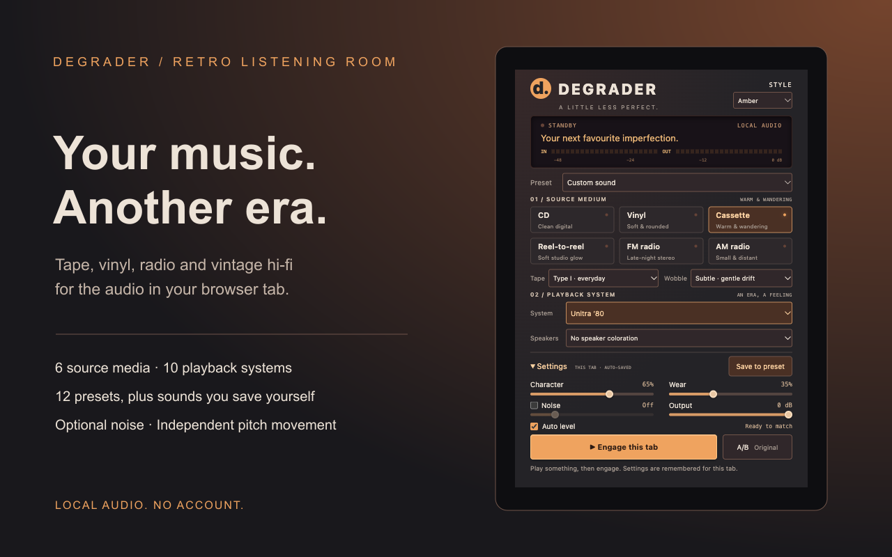

A LITTLE LESS PERFECT.
Your music.
Another era.
Give a playing Chrome tab the feel of tape, vinyl, radio and vintage hi-fi. Shape the character, choose your playback system and keep listening.

A listening room in your browser
Six source media, ten playback systems, twelve factory presets and sounds you save yourself. Explore cassette grades, vinyl profiles, independent pitch movement and three tube-inspired amplifiers. Optional noise is off by default. Automatic level matching helps you compare the character of the sound.
The effects are stylized impressions, not measured replicas of named equipment. Chrome 116 or newer is required. One tab is processed at a time; some protected streaming content cannot be captured.
Audio stays with you
Processing happens on your computer. No audio recordings, uploads, accounts or analytics. Presets and appearance are stored locally in Chrome. Read the privacy policy.
Support
Developed by PBA77. Report a bug or ask a question through the public support tracker. Please do not post private information, credentials or audio recordings.